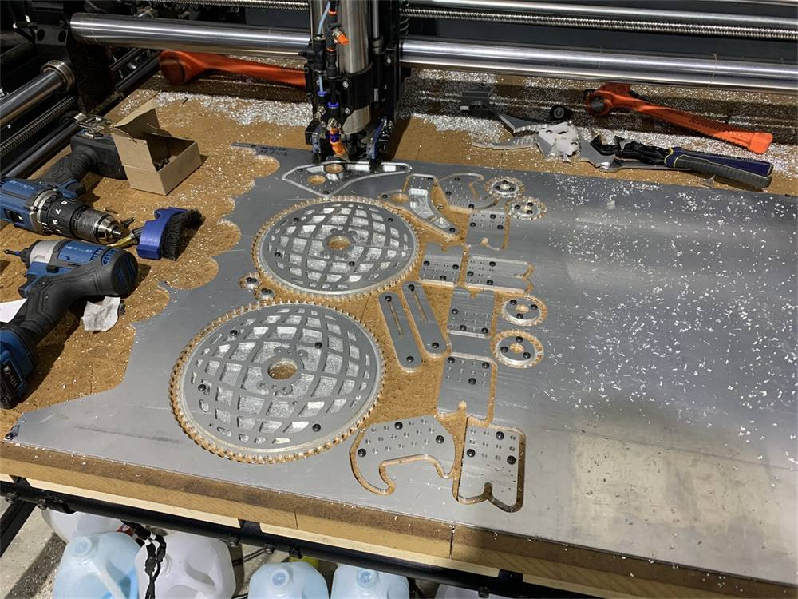
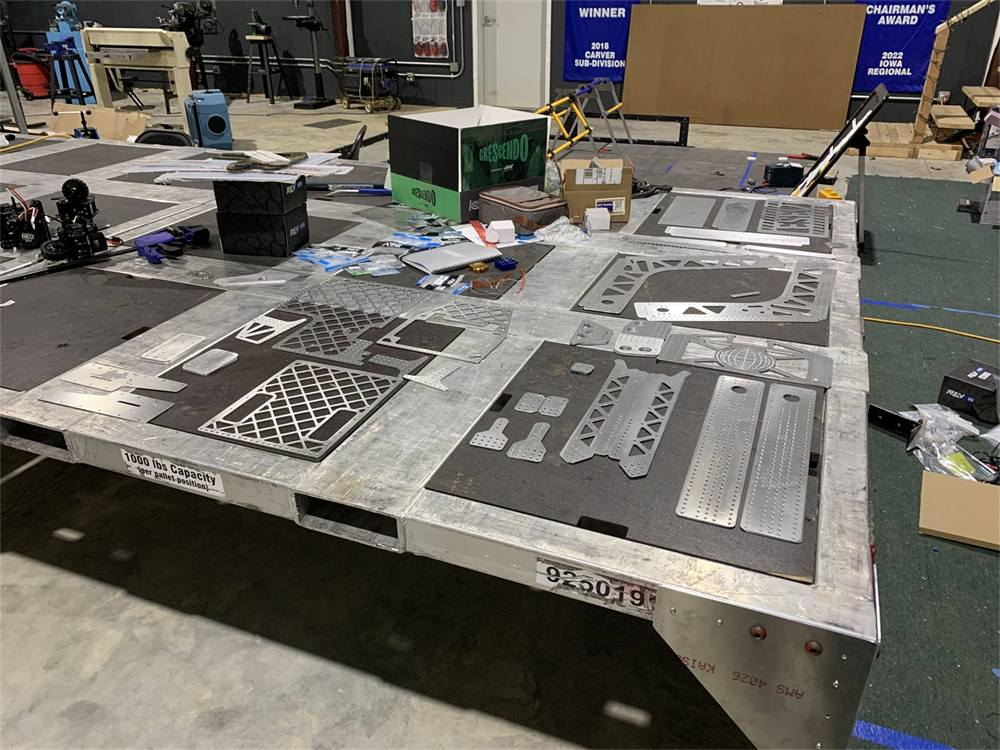
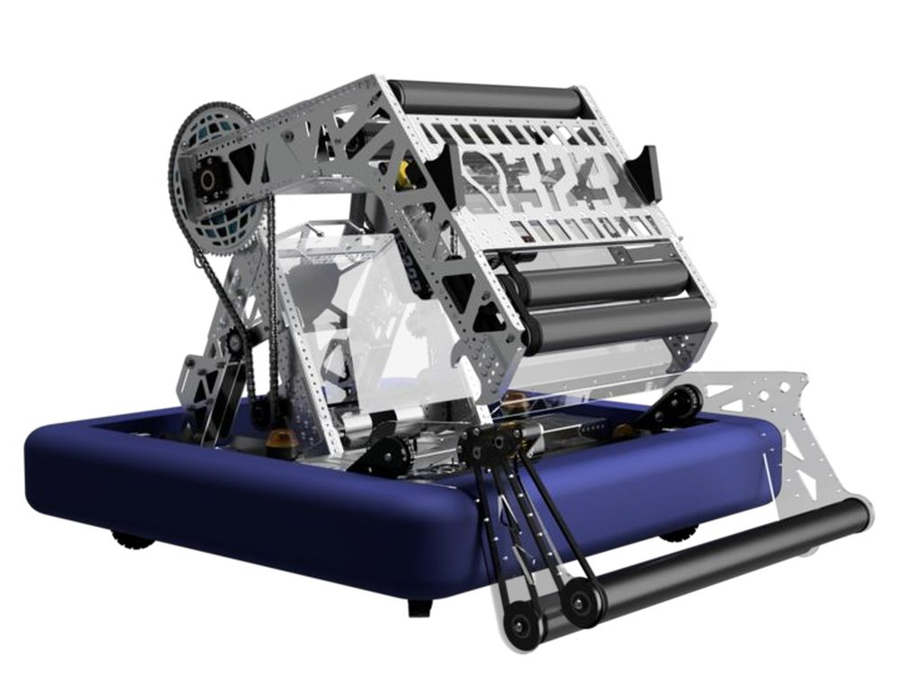
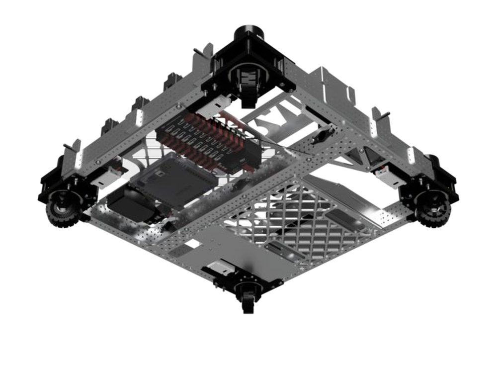
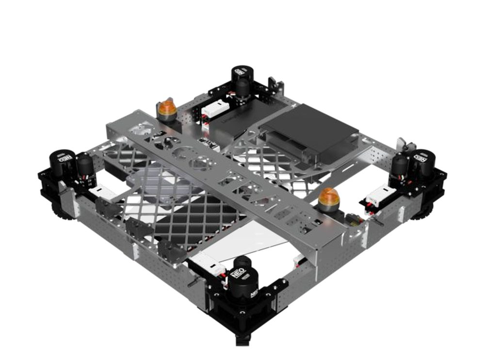

FRC 2024
Designed approximately 70% of the robot, machined approximately 50% of its components, and completed approximately 50% of assembly. I also wrote a traction-control system for the swerve drivetrain.
Technical Highlights
- The 26-by-26-inch drive base used REV MAXSwerve modules with a calculated top speed of 18.57 feet per second.
- A cross-braced sheet-metal arm weighed approximately 4 pounds, with a 14-pound complete assembly rated for more than 300 pounds of end load.
- A full-width intake and two-NEO shooter were designed for fast note collection and launch.
- Autonomous software used PathPlanner, AprilTag pose estimation, and target tracking.





